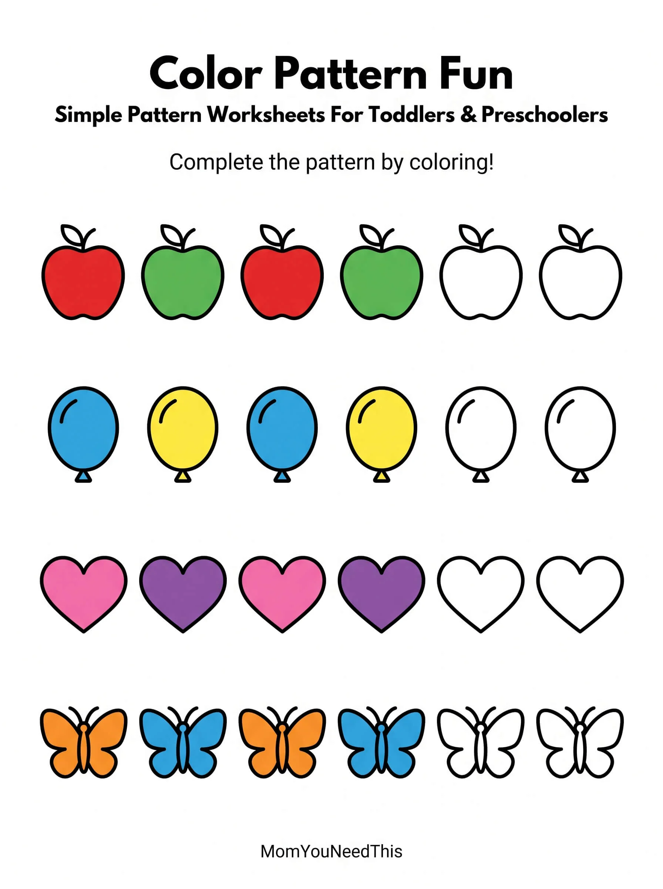

Color Pattern AB Free Printable AB Color Pattern Activity For Kids
Help toddlers and preschoolers practice early pattern recognition with this fun, kid-friendly AB color pattern printable. Children can identify repeating color sequences, figure out what comes next, and build early math and logic skills through playful learning.
Quick Answer
This color pattern AB printable asks children to finish each pattern themselves: study the repeating two-color sequence, then color the blank shapes to continue it. The worksheet has four rows to complete, and a parent answer key is on the page. A free PDF for toddlers and preschoolers — download, print and color, no signup.
At a Glance
- Ages: Toddlers and preschoolers
- Activity: Coloring the blank shapes to continue AB color patterns
- Skills: Pattern continuation and color recognition
- Format: Printable worksheet (PDF)
- Cost: Free, no signup
🎨 Find The Pattern
This Color Pattern AB worksheet carries its patterns in color alone. Every row keeps one picture — apples, balloons, hearts, butterflies — and alternates just its color: red apple, green apple, red apple, green apple. The last two pictures in each row are printed as empty outlines, and your child's job is to color them in the colors the pattern demands. Four rows, eight blanks, and nothing needed but crayons.
Because the shape never changes inside a row, this is pattern work a young toddler can genuinely do. There is no shape to draw and nothing to cut out — the only question is “which color comes next?”, asked eight times in a row. If your child can name their colors, they are ready for this sheet.

🖨️ Download Your Free Color Pattern AB Printable
Because the shape never changes inside a row, this is pattern work a young toddler can genuinely do.
⬇️ Download Free Printable 🖨️ Print🎁 Free printable for toddlers & preschoolers
How To Use This Printable
Start with the apple row and say the colors out loud together, pointing at each apple: “red, green, red, green…” Then stop and ask what color the next apple should be. When your child answers, hand over that crayon and let them color the first empty apple themselves — the answering and the coloring are both the exercise.
Each row has TWO empty pictures, and the second one is the real test. Coloring the first blank only needs “what comes next”; the second blank needs the pattern to keep going — red after green, again. If the first blank is right and the second is wrong, your child has the prediction but not yet the repeating unit, and one more chanted run-through (“red, green, red, green, red, green!”) usually clicks it into place.
Work through the four rows in order — apples, balloons, hearts, butterflies — or let your child choose their favorite picture first. Finish by making patterns off the page: two crayons alternated in a line, red-green-red-green, is this exact worksheet lying on the table.
Why Learn Color Patterns?
Color is the most concrete pattern unit there is. Before a child can track patterns in shapes, sizes, sounds or numbers, they can see that red follows green follows red — the alternation is visible at a glance, and predicting it is the same mental move every later pattern will ask for. This sheet isolates that one move and repeats it eight times with four different pictures, so the skill detaches from any single row.
The sheet doubles as color teaching. Eight color words get named over and over — red, green, blue, yellow, pink, purple, orange — always attached to a job, which is how color vocabulary actually sticks. And the coloring itself is fine-motor practice with a purpose: filling an apple neatly matters to the child because the apple has to BE red for the pattern to work, so care has a reason.
🖨️ How to Use This Printable
Get started in minutes — everything here is free and made for busy parents.
- Download the printable. Tap the download button to save the free Color Pattern AB file to your device.
- Print it out. Use any home printer and regular paper — cardstock works great for pages little hands will use again and again.
- Learn together. Sit with your child and chant each row's colors out loud — “red, green, red, green” — then let them color the two empty pictures to keep the pattern going. Short sessions work best.
- Explore more. Check the free printables linked below for your next activity.
📋 The Four Rows — A Parent's Answer Key
Apples: red, green, red, green — the two empty apples are colored red, then green.
Balloons: blue, yellow, blue, yellow — the two empty balloons are colored blue, then yellow.
Hearts: pink, purple, pink, purple — the two empty hearts are colored pink, then purple.
Butterflies: orange, blue, orange, blue — the two empty butterflies are colored orange, then blue.
Every row runs the same AB unit twice and then asks your child to run it a third time. That is the whole design: see the unit, say the unit, extend the unit. If a row goes wrong, do not correct the coloring — chant the row's colors from the start together and let your child spot where their color broke the chant. Self-corrected patterns teach more than fixed ones.
🎁 Keep Exploring Free Learning Activities
Discover more printable activities, toddler resources, and learning ideas created for busy parents.
🎁 View All Free Resources❓ Color Pattern AB FAQs
Is this Color Pattern AB printable free?
Yes — this Color Pattern AB printable is 100% free to download and print, like every printable on MomYouNeedThis. No signup, no payment, just tap the download button. Print it as many times as you like; the four rows (apples, balloons, hearts and butterflies) reward a second run once the idea clicks.
How do I teach patterns with this printable?
Chant the colors. Point at each picture in a row and say its color together — “red apple, green apple, red apple, green apple” — then ask what color the next one should be and let your child color the empty outline. Each row has two empty pictures to color. Start with the apples, and if the second blank in a row goes wrong, chant the whole row again rather than correcting the color directly.
Why are patterns important for preschoolers?
Patterns are prediction, and prediction is the root of early math — sequencing, counting and logic all grow out of noticing what repeats and what comes next. On this sheet the thing being predicted is color, the easiest attribute for a toddler to see and name, so the prediction skill can be practiced on its own. Your child also rehearses eight color words and gets purposeful coloring practice in the same ten minutes.
🔗 More Free Printables You’ll Love
Pair this printable with more free learning activities from the MomYouNeedThis library.
- 🔤 Alphabet Coloring PagesFree A to Z alphabet coloring printables for toddlers and preschoolers.
- 🎏 Free Animal Pattern ABFree animal pattern ab printable for toddlers and preschoolers.
- 🎏 Free Animal Pattern WorksheetsFree animal pattern worksheets printable for toddlers and preschoolers.
- 🎏 Free Color Pattern WorksheetsFree color pattern worksheets printable for toddlers and preschoolers.